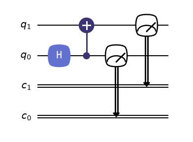
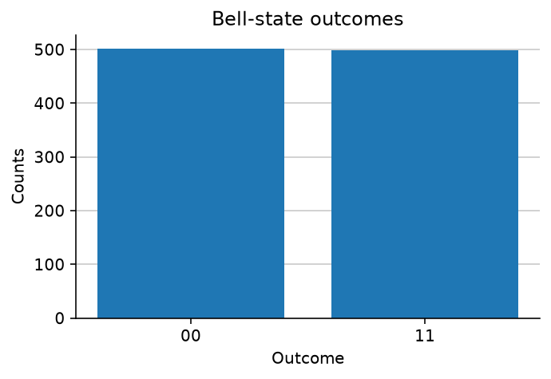

Build, draw, and run one Program¶
In about ten minutes, you will create a Bell pair, draw its circuit, run 1,000
shots, and see why only 00 and 11 appear. The computation will live in a
Program from start to finish.
Install FatQat from source¶
FatQat requires Python 3.12 or later and is not yet published on PyPI. Clone the repository first:
git clone https://github.com/spaceqat/fatqat.git
cd fatqat
We recommend uv for local projects because it
records the selected Python minor version in .python-version. This keeps the
interpreter choice explicit and makes the environment easier to reproduce:
uv python pin 3.12
uv venv
uv pip install .
Keep .python-version with the project so later uv commands select the same
Python minor version. If you prefer the standard library tools, create and
activate a virtual environment instead:
python -m venv .venv
# macOS or Linux
source .venv/bin/activate
# Windows PowerShell
.venv\Scripts\Activate.ps1
Then install FatQat with pip:
python -m pip install --upgrade pip
python -m pip install .
Write a Bell-state Program¶
A Program records quantum and classical resources together with the instructions
that act on them. This one prepares two qubits in a Bell state and measures both:
>>> import fatqat as fq
>>> import fatqat.operations as ops
>>> program = fq.Program(2, 2)
>>> program.add(ops.H, 0)
>>> program.add(ops.CX, (0, 1))
>>> program.measure_all()
Program(2, 2) creates two qubits and two classical bits. H puts qubit 0
into a superposition, and CX uses qubit 0 as its control and qubit 1 as its
target. The final instruction writes both quantum outcomes to the classical
bits.
The Program describes what should happen. It has not selected a simulator
or performed any evolution yet. FatQat is also extensible: users can define
operations and provide the backend implementations that execute them. Built-in
operations such as Put, Pair, and Unpair show how AtomArraySimulator can
represent workflows beyond standard quantum gates.
Inspect the Program¶
Drawing is a native Program capability built on QuTiP-QIP's circuit drawing tools. FatQat translates the Program's instructions for that renderer. The default renderer returns a Matplotlib figure that you can display or save:
>>> figure = program.draw()
>>> len(figure.axes)
1

Reproduce this figure
import matplotlib.pyplot as plt
import fatqat as fq
import fatqat.operations as ops
program = fq.Program(2, 2)
program.add(ops.H, 0)
program.add(ops.CX, (0, 1))
program.measure_all()
figure, axis = plt.subplots()
program.draw(ax=axis)
For a terminal-friendly version, program.draw("text") returns a string
instead of printing it. Drawing is a view of the recorded instruction
structure; it does not run the Program.
Run it¶
The general-purpose simulator evolves the Program as a quantum circuit.
run() executes the Program and returns a completed
Job. Calling job.result() returns a
Result containing the requested outputs, or raises the
recorded execution error:
>>> backend = fq.simulator.Simulator()
>>> job = backend.run(
... program,
... shots=1000,
... simulation_config={"seed": 7},
... )
>>> result = job.result()
>>> counts = result.get_counts()
>>> sorted(counts)
['00', '11']
>>> sum(counts.values())
1000
Each shot ends as either 00 or 11: the two measured bits agree because
the qubits are entangled. Their counts are close rather than exactly equal
because measurement samples the state. The fixed seed makes this particular
run reproducible. Result.draw() provides a built-in chart for these counts,
so no custom Matplotlib styling is needed.

Reproduce this figure
import matplotlib.pyplot as plt
import fatqat as fq
import fatqat.operations as ops
program = fq.Program(2, 2)
program.add(ops.H, 0)
program.add(ops.CX, (0, 1))
program.measure_all()
result = (
fq.simulator.Simulator(runtime="numpy")
.run(program, shots=1000, simulation_config={"seed": 7})
.result()
)
counts = result.get_counts()
assert sorted(counts) == ["00", "11"]
assert sum(counts.values()) == 1000
figure, axis = plt.subplots(figsize=(5.2, 3.2))
result.draw(
ax=axis,
title="Bell-state outcomes",
)
Read basis indices¶
Public subsystem 0 is the most-significant factor. The two-qubit basis is
|00>, |01>, |10>, |11> at flat indices 0 through 3. Consequently,
X(q0)|00> has its nonzero amplitude at index 2, while X(q1)|00> uses
index 1. Count strings use the same left-to-right public slot order: measuring
those states into (c0, c1) produces "10" and "01", respectively.
Keep this Program: the next chapters change the backend to explore circuit
behavior, hardware constraints, and physical dynamics.
Continue¶
- Write quantum computations with Program to use explicit registers, measurements, conditions, parameters, and qudits.
- Choose how much physics to model to compare FatQat's execution paths.
- Bring Programs to and from OpenQASM and Qiskit to connect an existing circuit workflow.